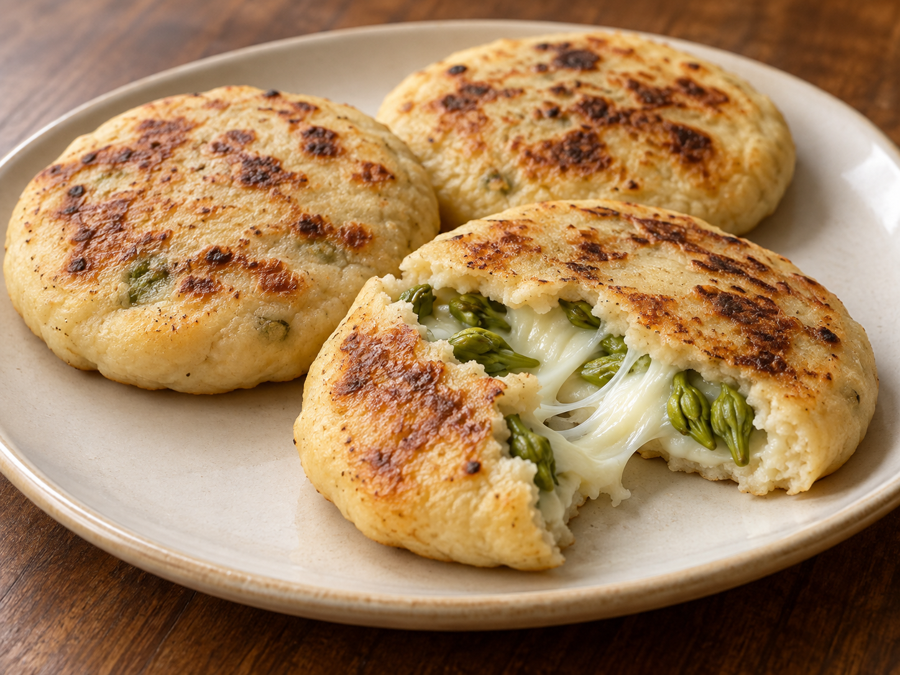

LOWCOUNTRY ROOTS. A WORLD TO EXPLORE.
Cook something
worth keeping.
The recipe. Your adjustments. That one note you don't want to lose. Keep them together, from familiar favorites to something completely new.
Open the cookbook → Use it on your phoneNo account required to browse. Your own edits stay in your browser.

Pupusas de queso con loroco
Thick corn cakes, melting cheese and the distinctive flavor of edible loroco flowers.
See the recipe →AI illustration · home adaptation, not kitchen-testedMORE THAN A LIST OF DISHES
Find your way to dinner.
What fits tonight?
Start with meal and time. Go deeper with ingredients, cooking method, country and tradition.
→02 /Keep the character.
Learn about distinctive ingredients. Substitution notes explain what can work and what changes the dish.
→03 /Make it your own.
Browse the expanded collection, save recipes and keep your own notes and named versions.
→A growing cookbook, with the details in view.
The current goal is 50 distinct recipes per country, added in stages. Most country collections are unfinished. The cookbook shows actual counts, source credits. Matching illustrations are labeled; missing photos are shown honestly.
Navigation is available in English and Spanish. Some recipe text and cooking notes retain their original language; full translations are not yet included.